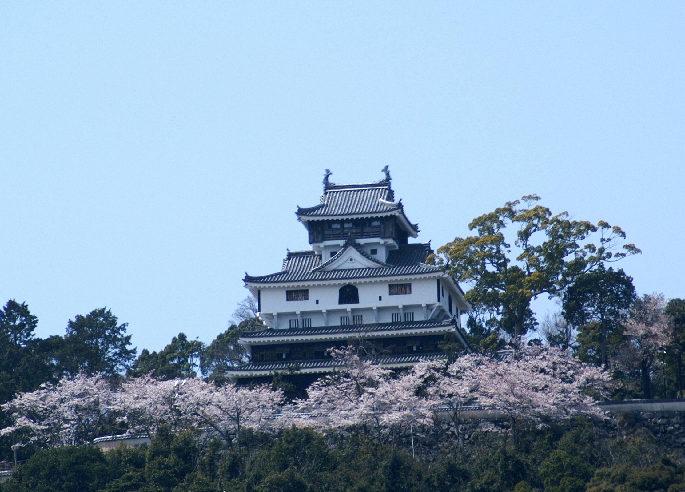

岩国城

岩国城とは？
ロープウエーに乗って入城！山の上の天守閣からは市内の様々な観光名所が一望できます。岩国の昔と今が感じられる場所です。 岩国城とは岩国城は、初代岩国領主吉川広家によって1608年に作られた山城で、眼下を流れる錦川を天然の外堀にし、標高約200メートルの 城山に位置していました。三層四階の桃山風南蛮造りでしたが、築城後8年で一国一城制により取り壊されました。現在の天守は、1962年に 再建されたものです。再建される際は、天守閣跡より市内を眺望できる東側へ約50メートル位置を変えられました。旧天守閣跡の石垣は、 当時の石積み技術のままに修復され、見学することができます。桃山南蛮造りの天守閣内に、錦帯橋の精密模型、写真、武具や甲冑などを 展示しています。天守閣は展望台になっていて、岩国市街の眺望を楽しむことができます。天守閣からは吉香公園、城下町、錦帯橋から岩国市内一面、 岩国航空基地、岩国錦帯橋空港、宮島をはじめとした瀬戸内海の島々や四国までが一望できます。また、企画展も不定期で開催されています。
岩国城（天守閣）入城料金
大人（中学生以上） 個人260円 団体（15名以上)200円
小学生 個人120円 団体 90円
セット割引（錦帯橋・岩国城ロープウエー・岩国城の3つのセット
大人個人 940円（団体750円）
小学生個人 450円（団体350円）
開館時間
9：00～16：45（入館16:30まで）
(2017年 岩国市公式観光webサイト http://kankou.iwakuni-city.net/iwakunijyo.html)より
アクセス
山陽本線「岩国駅」または山陽新幹線「新岩国駅」からバス約20分「錦帯橋バスセンター」
～徒歩10分「山麓駅」乗換～ロープウエー「山頂駅」～徒歩5分
(2017年 日本100名城ガイド https://www.100finecastles.com/castles/iwakunijo/)より